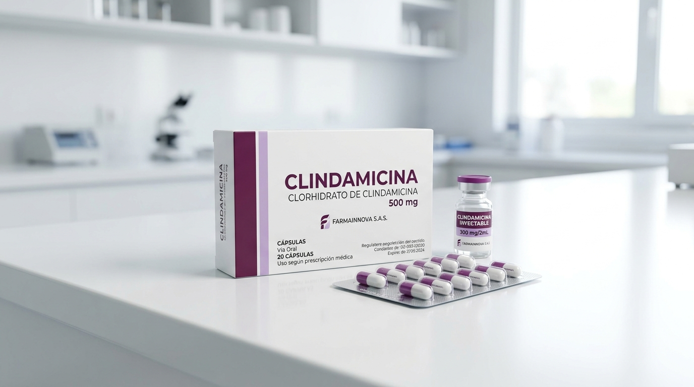

Clindamicina
La clindamicina es un antibiótico semisintético perteneciente al grupo de las lincosamidas. Se utiliza para tratar infecciones causadas por bacterias sensibles, especialmente bacterias anaerobias y algunas bacterias Gram positivas. También se emplea por vía tópica para el tratamiento del acné vulgar.
LADME, Mecanismo de Acción, Dosis y Seguridad
Absorción
~90% Oral
Vía oral: Biodisponibilidad cercana al 90%; Cmax ~2,50 µg/mL a los 45 minutos.
Vía vaginal: Óvulos producen exposición sistémica 40–50 veces menor que parenteral; crema vaginal Cmax ~0,1% de la parenteral.
Distribución
Vd 43–74 L
Amplia distribución incluyendo huesos y diferentes tejidos (NO se distribuye en el líquido cefalorraquídeo).
Unión a proteínas: Variable, entre 60% y 94% (principalmente a alfa-1-glucoproteína ácida).
Metabolismo
CYP3A4 / CYP3A5
Metabolismo hepático principalmente por CYP3A4 (y menor proporción CYP3A5). Produce dos metabolitos inactivos principales:
• Clindamicina sulfóxido (reacción de oxidación).
• N-desmetilclindamicina (reacción de desmetilación).
Eliminación
Cl 12,3–17,4 L/h
Principalmente en forma de metabolitos inactivos (~10% de actividad antibiótica por orina y ~3,6% por heces).
Vida media: Adultos ~3 h; Niños ~2,5 h; Adultos mayores ~4 h. El aclaramiento puede disminuir en cirrosis y modificarse en anemia.